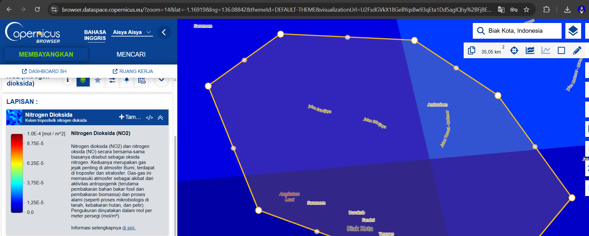
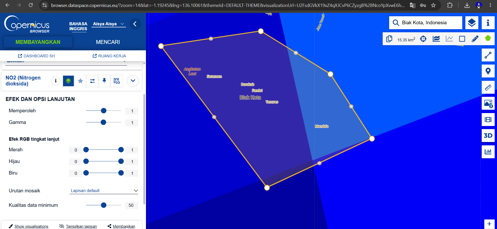
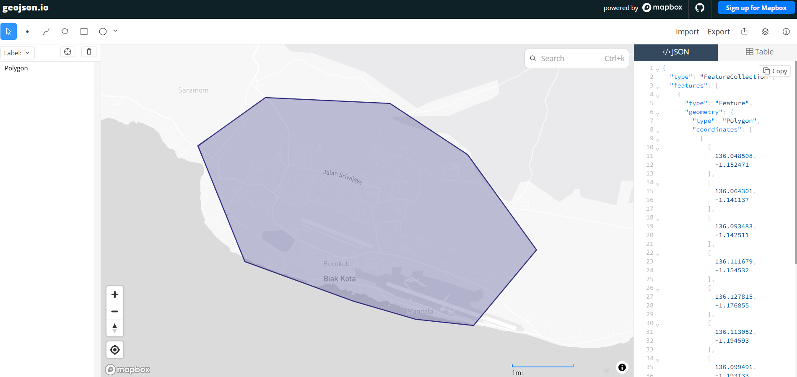
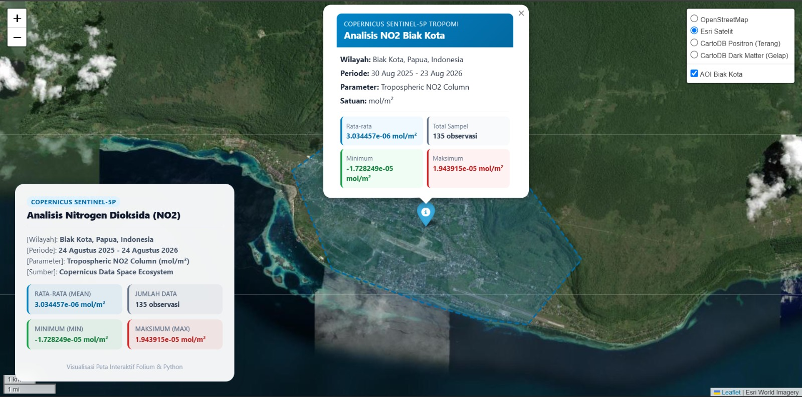
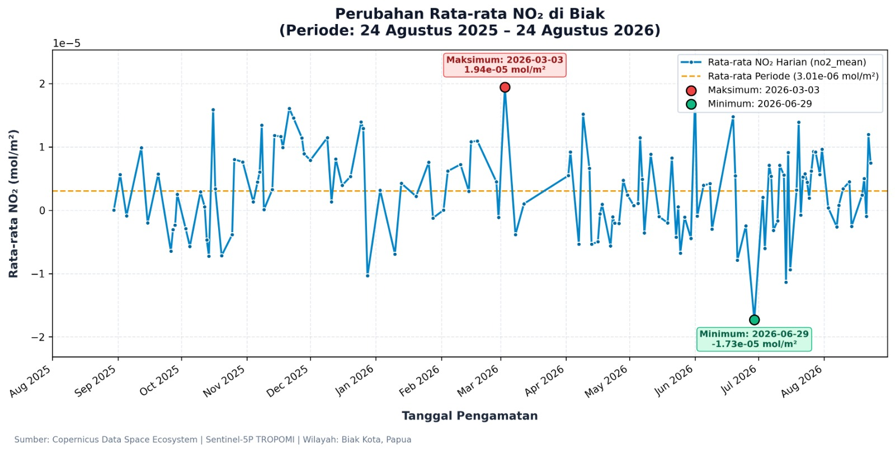

Business Understanding#
Mengamati Kualitas Udara
A. Pengertian Indeks Kualitas Udara Indeks Kualitas Udara (Air Quality Index/AQI) merupakan indeks yang digunakan untuk menggambarkan kondisi kualitas udara berdasarkan konsentrasi satu atau beberapa polutan di udara sehingga kondisi udara dapat lebih mudah dipahami oleh masyarakat. AQI umumnya menggunakan konsentrasi polutan tertentu dan membandingkannya dengan ambang atau standar yang telah ditetapkan. WHO menjelaskan bahwa indeks kualitas udara merupakan alat untuk mengomunikasikan kondisi kualitas udara dan risiko kesehatan secara sederhana.
B. Polutan yang Diamati: Nitrogen Dioksida (NO₂) Pada penelitian ini, polutan yang diamati adalah Nitrogen Dioksida (NO₂). NO₂ merupakan salah satu gas pencemar udara yang terutama berkaitan dengan proses pembakaran bahan bakar fosil, seperti aktivitas transportasi, industri, dan pembangkit energi. WHO juga menyebutkan NO₂ sebagai salah satu polutan utama yang menjadi perhatian dalam kualitas udara.
NO₂ dipilih karena dapat digunakan sebagai salah satu indikator untuk mengamati perubahan kondisi atmosfer akibat aktivitas pembakaran. WHO juga menyebut NO₂ sebagai indikator yang baik untuk aktivitas transportasi, khususnya di wilayah perkotaan.
Dalam penelitian ini, data NO₂ diperoleh dari Sentinel-5P/TROPOMI melalui Copernicus Data Space. Data yang digunakan merupakan tropospheric NO₂ column, yaitu jumlah NO₂ pada kolom troposfer yang diamati oleh sensor satelit. Copernicus mencantumkan satuan data NO₂ tersebut sebagai mol/m².
2. Data Understanding#
2.1 Collecting / Mengumpulkan Data Udara dari Copernicus Data Space#
Data yang digunakan dalam penelitian ini adalah data Nitrogen Dioksida (NO₂) yang diperoleh dari Copernicus Data Space Ecosystem. Data tersebut berasal dari satelit Sentinel-5P dengan instrumen TROPOMI.
Parameter yang digunakan adalah Tropospheric NO₂ Column, yaitu jumlah Nitrogen Dioksida (NO₂) dalam kolom troposfer yang diamati oleh satelit. Nilai NO₂ pada data dinyatakan dalam satuan mol/m².
Data yang dikumpulkan berfokus pada wilayah Biak Kota, Papua, Indonesia dengan periode pengamatan selama satu tahun, yaitu mulai dari 24 Agustus 2025 sampai 24 Agustus 2026.
Rincian Data#
Komponen |
Keterangan |
|---|---|
Sumber Data |
Copernicus Data Space Ecosystem |
Satelit |
Sentinel-5P |
Instrumen |
TROPOMI |
Parameter |
Nitrogen Dioksida (NO₂) |
Jenis Data |
Tropospheric NO₂ Column |
Level Data |
Level-2 |
Satuan |
mol/m² |
Wilayah Pengamatan |
Biak Kota, Papua, Indonesia |
Periode Pengamatan |
24 Agustus 2025 – 24 Agustus 2026 |
Tampilan Parameter NO₂#

Gambar 1. Tampilan parameter Nitrogen Dioksida (NO₂) pada Copernicus Data Space.
Berdasarkan Gambar 1, parameter yang digunakan dalam penelitian adalah Nitrogen Dioksida (NO₂) dengan jenis data Tropospheric NO₂ Column. Data ditampilkan dalam bentuk peta dengan gradasi warna yang menunjukkan variasi nilai NO₂. Nilai pada legenda dinyatakan dalam satuan mol/m².
Parameter tersebut digunakan untuk mengamati perubahan dan persebaran NO₂ pada wilayah penelitian selama periode pengamatan yang telah ditentukan.
Penentuan Wilayah Pengamatan#

Gambar 2. Penentuan Area of Interest (AOI) untuk pengambilan data NO₂ di wilayah Biak Kota, Papua, Indonesia.
Pada Gambar 2, wilayah pengamatan ditentukan menggunakan Area of Interest (AOI) berbentuk polygon pada Copernicus Data Space. AOI digunakan untuk membatasi wilayah pengambilan data sehingga data yang diperoleh sesuai dengan wilayah penelitian.
Berdasarkan tampilan pada Copernicus Data Space, wilayah AOI yang ditentukan memiliki luas sekitar 15,35 km². Selain itu, pada pengaturan visualisasi terdapat parameter kualitas data minimum sebesar 50.
Dengan adanya AOI tersebut, pengambilan data NO₂ difokuskan pada wilayah Biak Kota, Papua, Indonesia selama periode 24 Agustus 2025 sampai 24 Agustus 2026.
Pembuatan Area of Interest (AOI)#
Untuk menentukan wilayah pengamatan secara lebih spesifik, dibuat Area of Interest (AOI) berbentuk polygon yang mencakup wilayah Biak Kota. Polygon tersebut kemudian digunakan sebagai batas wilayah dalam proses pengambilan data NO₂.

Gambar 3. Polygon Area of Interest (AOI) wilayah Biak Kota dalam format GeoJSON.
Polygon yang dibuat memiliki koordinat geografis berupa longitude dan latitude yang menjadi batas wilayah pengamatan. Data koordinat tersebut digunakan untuk menentukan area yang akan diamati pada proses pengambilan data NO₂ dari Copernicus Data Space.
Kode GeoJSON AOI Biak#
Kode GeoJSON yang digunakan untuk menentukan Area of Interest (AOI) wilayah Biak Kota adalah sebagai berikut:
{
"type": "FeatureCollection",
"features": [
{
"type": "Feature",
"geometry": {
"type": "Polygon",
"coordinates": [
[
[
136.048508,
-1.152471
],
[
136.064301,
-1.141137
],
[
136.093483,
-1.142511
],
[
136.111679,
-1.154532
],
[
136.127815,
-1.176855
],
[
136.113052,
-1.194593
],
[
136.099491,
-1.193133
],
[
136.0849,
-1.188876
],
[
136.059494,
-1.179603
],
[
136.048508,
-1.152471
]
]
]
},
"properties": {}
}
]
}
Gambar 3. Kode GeoJSON yang digunakan untuk menentukan Area of Interest (AOI) wilayah Biak Kota, Papua, Indonesia.
2.2 Eksplorasi Data#
Eksplorasi data dilakukan untuk mengetahui karakteristik, persebaran, serta perubahan nilai Nitrogen Dioksida (NO₂) di wilayah Biak selama periode pengamatan.
Eksplorasi data dilakukan melalui beberapa tahap, yaitu visualisasi data dalam bentuk peta, visualisasi data dalam bentuk grafik, serta pemeriksaan kualitas data.
a. Visualisasi Data Peta#
Data Nitrogen Dioksida (NO₂) divisualisasikan dalam bentuk peta interaktif menggunakan library Folium. Peta menampilkan wilayah Biak Kota, Papua, Indonesia berdasarkan Area of Interest (AOI) yang telah dibuat sebelumnya menggunakan geojson.io.
Pada peta ditampilkan batas wilayah AOI Biak Kota serta informasi hasil pengolahan data NO₂, meliputi nilai rata-rata, minimum, maksimum, dan jumlah observasi. Data yang digunakan merupakan data Tropospheric NO₂ Column dari Copernicus Sentinel-5P/TROPOMI dengan satuan mol/m².
Visualisasi ini digunakan untuk memberikan gambaran mengenai wilayah pengamatan dan informasi nilai Nitrogen Dioksida (NO₂) selama periode pengamatan 24 Agustus 2025 sampai 24 Agustus 2026.

Gambar 4. Visualisasi peta interaktif wilayah pengamatan dan informasi Nitrogen Dioksida (NO₂) di Biak Kota menggunakan Folium.
b. Visualisasi Data Grafik#
Data Nitrogen Dioksida (NO₂) divisualisasikan dalam bentuk grafik untuk melihat perubahan nilai NO₂ berdasarkan waktu selama periode pengamatan 24 Agustus 2025 sampai 24 Agustus 2026. Grafik menggunakan nilai rata-rata (mean) Tropospheric NO₂ Column dari data Copernicus Sentinel-5P/TROPOMI dengan satuan mol/m².
Visualisasi grafik digunakan untuk mengetahui pola perubahan nilai NO₂ dari waktu ke waktu di wilayah Biak Kota, Papua, Indonesia. Selain nilai rata-rata, grafik juga menampilkan nilai maksimum dan minimum selama periode pengamatan sebagai gambaran variasi nilai NO₂.
Hasil pengolahan data yang digunakan dalam pembuatan grafik juga disimpan dalam format CSV sehingga dapat digunakan untuk proses analisis dan pemeriksaan data selanjutnya.

Gambar 5. Grafik perubahan rata-rata Nitrogen Dioksida (NO₂) di wilayah Biak Kota selama periode 24 Agustus 2025 sampai 24 Agustus 2026.
c. Pemeriksaan Data#
Sebelum dilakukan analisis, data NO₂ akan diperiksa untuk mengetahui kualitas dan kelengkapan data.
Pemeriksaan data meliputi:
Missing values, untuk mengetahui apakah terdapat data yang kosong atau tidak memiliki nilai.
Invalid values, untuk mengetahui apakah terdapat nilai yang tidak valid atau tidak sesuai dengan kriteria data.
Noise, untuk mengetahui adanya data yang dapat mengganggu hasil analisis.
Outliers, untuk mengetahui nilai NO₂ yang memiliki perbedaan jauh dari sebagian besar data lainnya.
Selain itu, kualitas data NO₂ akan diperhatikan menggunakan parameter qa_value. Parameter tersebut dapat digunakan untuk menyaring data berdasarkan kualitas pengamatan sehingga data dengan kualitas rendah dapat diidentifikasi sebelum digunakan dalam analisis.
2.3 Hasil Eksplorasi Data#
Hasil eksplorasi data digunakan untuk mengetahui nilai, persebaran, dan perubahan Nitrogen Dioksida (NO₂) di wilayah Biak selama periode 24 Agustus 2025 sampai 24 Agustus 2026.
Hasil eksplorasi data akan disajikan dalam beberapa bentuk, yaitu:
Peta persebaran NO₂ menggunakan library Folium untuk melihat distribusi NO₂ secara spasial.
Grafik perubahan NO₂ untuk melihat perubahan nilai NO₂ berdasarkan waktu.
File CSV yang berisi data hasil pengolahan untuk digunakan dalam analisis lebih lanjut.
Hasil pemeriksaan data yang mencakup missing values, invalid values, noise, dan outliers.